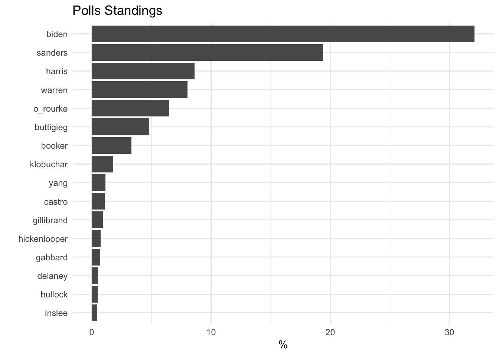

Chapter 10 Web-Scraping: Polling use case
A very important metric to keep track of is how your candidate is polling. Are they gaining a lead in the polls or falling behind? This data is often reported via traditional news organizations or some other mediums. The supposed demi-God and mythical pollster Nate Silver’s organization FiveThirtyEight does a wonderful job aggregating polls. Their page National 2020 Democratic Presidential Primary Polls has a table of the most recent polls from many different pollsters.
In this use case we will scrape acquire this data through web scraping using rvest. We will also go over ways to programatically save polls results to a text file. Saving polling results can allow you present a long term view of your candidate’s growth during the quarter.
10.1 Understanding rvest
This use case will provide a cursory overview of the package rvest. To learn more go here.
Web scraping is the process of extracting data from a website. Websites are written in HTML and CSS. There are a few aspects of these languages that are used in web scraping that is important to know. HTML is written in a series of what are call tags. A tag is a set of characters wrapped in angle brackets—i.e. <img>.
With CSS (cascading style sheets), web developers can give unique identifiers to a tag. Classes can also be assigned to a tag. Think of these as group. With web scraping we can specify a particular part of a website by it’s HTML tag and perhaps it’s class or ID. rvest provides a large set of functions to make this simpler.
10.2 Example
For this example we will be scraping FiveThirtyEight’s aggregated poll table. The table can be found at https://projects.fivethirtyeight.com/2020-primaries/democratic/national/.
Before we begin, we must always prepare our workspace. Mise en place.
library(rvest)
library(tidyverse)The first thing we will have to do is specify what page we will be scraping from. html_session() will simulate a session in an html browser. By providing a URL to html_session() we will then be able to access the underlying code of that page. Create an object called session by providing the FiveThirtyEight URL to html_session().
session <- html_session("https://projects.fivethirtyeight.com/2020-primaries/democratic/national/")The next and most important step is to identify which piece of HTML code contains the table. The easiest way to do this is to open up the webpage in Chrome and open up the Inspect Elements view (on Mac - ⌘ + Shift + C). Now that this is open, click the select element button at the top left corner of the inspection pane. Now hover over the table.
You will see that the HTML element is highlighted. We can see that it is a table tag. Additionally we see that there are two different classes polls-table and tracker. To specify a class we put a preceding . to the class name—i.e. .class-name. If there are multiple classes we just append the second class name to it—i.e. .first-class.second-class. Be aware that these selectors can be quite finicky and be a bit difficult to figure out. You might need to do some googling or playing around with the selector.
To actually access the content of this HTML element, we must specify the element using the proper selector. html_node() will be used to do this. Provide the html session and the CSS selector to html_node() to extract the HTML element.
session %>%
html_node(".polls-table.tracker")## {xml_node}
## <table class="polls-table tracker">
## [1] <thead class="hide-mobile" id="table-header"><tr>\n<th class="new">< ...
## [2] <tbody>\n<tr class="visible-row" data-id="97723">\n<!-- Shared--><td ...Here we see that this returns on object of class xml_node. This object returns some HTML code but it is still not entirely workable. Since this is an HTML table we want to extract we can use the handy html_table(). Note that if this wasn’t a table but rather text, you can use html_text().
session %>%
html_node(".polls-table.tracker") %>%
html_table()Take note of the extremely informative error. It appears we might have to deal with mismatching columns.
session %>%
html_node(".polls-table.tracker") %>%
html_table(fill = TRUE)## Dates Pollster
## 1 • Jun 6-10, 2019503 RV Jun 6-10, 2019
## 2 • Jun 3-9, 201917,012 LV Jun 3-9, 2019
## 3 • May 29-Jun 5, 20192,271 RV May 29-Jun 5, 2019
## 4 • May 29-Jun 5, 20192,525 A May 29-Jun 5, 2019
## 5 • Jun 2-4, 2019500 RV Jun 2-4, 2019
## 6 • Jun 2-4, 2019550 A Jun 2-4, 2019
## 7 • Jun 1-2, 2019431 RV Jun 1-2, 2019
## 8 • May 27-Jun 2, 201916,587 LV May 27-Jun 2, 2019
## 9 • May 28-31, 2019412 RV May 28-31, 2019
## 10 • May 29-30, 2019471 RV May 29-30, 2019
## 11 • May 28-30, 2019881 RV May 28-30, 2019
## 12 • May 28-30, 2019881 RV May 28-30, 2019
## 13 • May 28-30, 2019881 RV May 28-30, 2019
## 14 • May 28-30, 2019881 RV May 28-30, 2019
## 15 • May 28-30, 2019881 RV May 28-30, 2019
## 16 • May 20-26, 201916,368 LV May 20-26, 2019
## Sample Sample Biden Sanders Harris Warren O'Rourke
## 1 A-Quinnipiac University 503 RV 30% 19% 7% 15%
## 2 B-Morning Consult 17,012 LV 37% 19% 7% 11%
## 3 B+Ipsos 2,271 RV 31% 14% 6% 9%
## 4 B+Ipsos 2,525 A 30% 15% 6% 8%
## 5 BYouGov 500 RV 27% 15% 9% 12%
## 6 BYouGov 550 A 27% 16% 8% 11%
## 7 C+HarrisX 431 RV 35% 16% 4% 5%
## 8 B-Morning Consult 16,587 LV 38% 19% 7% 10%
## 9 A-CNN/SSRS 412 RV 32% 18% 8% 7%
## 10 C+Harris Interactive 471 RV 36% 17% 8% 5%
## 11 C+HarrisX 881 RV 42% 37%
## 12 C+HarrisX 881 RV 41% 38%
## 13 C+HarrisX 881 RV 43% 41%
## 14 C+HarrisX 881 RV 37% 40%
## 15 C+HarrisX 881 RV 39% 41%
## 16 B-Morning Consult 16,368 LV 38% 20% 7% 9%
## Buttigieg Booker Klobuchar Castro Yang Gillibrand Hickenlooper Gabbard
## 1 3% 8% 1% 1% 0% 1% 0% 0%
## 2 4% 7% 3% 2% 1% 1% 1% 1%
## 3 3% 5% 2% 2% 1% 1% 0% 1%
## 4 4% 5% 2% 1% 0% 1% 0% 1%
## 5 2% 10% 2% 1% 0% 1% 0% 1%
## 6 2% 9% 2% 1% 0% 1% 0% 1%
## 7 4% 8% 3% 1% 0% 0% 0% 1%
## 8 4% 7% 3% 1% 1% 1% 1% 1%
## 9 5% 5% 3% 2% 2% 1% 1% 0%
## 10 4% 5% 3% 0% 1% 1% 0% 1%
## 11
## 12
## 13
## 14
## 15
## 16 4% 7% 3% 1% 1% 1% 1% 1%
## Delaney Inslee Ryan Bullock de Blasio Bennet Williamson Gravel Swalwell
## 1 0% 0% 0% 1% 0% 0% 0% 0% 0%
## 2 1% 1% 1% 1% 1% 0% 1% 0%
## 3 1% 0% 0% 1% 0% 1% 0% 0% 0%
## 4 1% 0% 0% 1% 0% 1% 0% 0% 0%
## 5 1% 1% 0% 0% 1% 2% 0% 0% 0%
## 6 1% 1% 0% 0% 1% 2% 0% 0% 0%
## 7 0% 0% 0% 0% 0% 0% 1% 1% 0%
## 8 1% 1% 1% 1% 1% 1% 1% 1%
## 9 1% 0% 1% 1% 0% 0% 1% 0%
## 10 0% 1% 1% 1% 0% 1%
## 11
## 12
## 13
## 14
## 15
## 16 1% 1% 0% 1% 1% 0% 1% 1%
## Moulton Messam H. Clinton Bloomberg M. Obama Brown Kerry Abrams Holder
## 1 0% 0% 0%
## 2 0% 0%
## 3 0% 0% 0%
## 4 0% 0% 0%
## 5 0% 0% 0%
## 6 0% 0% 0%
## 7 0% 0% 0%
## 8 0% 0%
## 9 0% 0% 0%
## 10 0% 0% 0% 1%
## 11
## 12
## 13
## 14
## 15
## 16 0% 0%
## McAuliffe Winfrey Ojeda Trump Cuomo Avenatti Kennedy Patrick Zuckerberg
## 1
## 2
## 3
## 4
## 5
## 6
## 7
## 8
## 9
## 10
## 11
## 12
## 13
## 14
## 15
## 16
## Pelosi Garcetti Newsom Steyer Schultz Kaine Johnson Kucinich Lee Scott
## 1
## 2
## 3
## 4
## 5
## 6
## 7
## 8
## 9
## 10
## 11
## 12
## 13
## 14
## 15
## 16
## Sinema Warner NA
## 1
## 2
## 3
## 4
## 5
## 6
## 7
## 8
## 9
## 10
## 11
## 12
## 13
## 14
## 15
## 16
## NA
## 1 Biden30%Sanders19%Warren15%Buttigieg8%Harris7%O'Rourke3%Booker1%Klobuchar1%Yang1%Ryan1%Gillibrand0%Castro0%Gabbard0%Inslee0%Hickenlooper0%Delaney0%Williamson0%Messam0%Swalwell0%Moulton0%Bennet0%Bullock0%de Blasio0%Gravel0%
## 2 Biden37%Sanders19%Warren11%Buttigieg7%Harris7%O'Rourke4%Booker3%Klobuchar2%Bennet1%Bullock1%Castro1%Delaney1%Gabbard1%Gillibrand1%Hickenlooper1%Inslee1%Yang1%Ryan1%de Blasio0%Moulton0%Swalwell0%Williamson0%
## 3 Biden31%Sanders14%Warren9%Harris6%Buttigieg5%O'Rourke3%Booker2%Klobuchar2%Castro1%Gabbard1%Hickenlooper1%Yang1%Ryan1%de Blasio1%Gillibrand0%Bullock0%Inslee0%Delaney0%Williamson0%Messam0%Swalwell0%Moulton0%Bennet0%Gravel0%
## 4 Biden30%Sanders15%Warren8%Harris6%Buttigieg5%O'Rourke4%Booker2%Klobuchar1%Gabbard1%Hickenlooper1%Yang1%Ryan1%de Blasio1%Castro0%Gillibrand0%Bullock0%Inslee0%Delaney0%Williamson0%Messam0%Swalwell0%Moulton0%Bennet0%Gravel0%
## 5 Biden27%Sanders15%Warren12%Buttigieg10%Harris9%Booker2%de Blasio2%O'Rourke2%Bullock1%Delaney1%Gabbard1%Hickenlooper1%Klobuchar1%Yang1%Bennet0%Castro0%Gillibrand0%Gravel0%Inslee0%Messam0%Moulton0%Ryan0%Swalwell0%Williamson0%
## 6 Biden27%Sanders16%Warren11%Buttigieg9%Harris8%Booker2%de Blasio2%O'Rourke2%Bullock1%Delaney1%Gabbard1%Hickenlooper1%Klobuchar1%Yang1%Bennet0%Castro0%Gillibrand0%Gravel0%Inslee0%Messam0%Moulton0%Ryan0%Swalwell0%Williamson0%
## 7 Biden35%Sanders16%Buttigieg8%Warren5%Harris4%O'Rourke4%Booker3%Klobuchar1%Hickenlooper1%Williamson1%Bennet1%Yang0%Ryan0%Bullock0%Castro0%de Blasio0%Delaney0%Gabbard0%Gillibrand0%Inslee0%Swalwell0%Gravel0%Moulton0%Messam0%
## 8 Biden38%Sanders19%Warren10%Harris7%Buttigieg7%O'Rourke4%Booker3%Bennet1%Bullock1%Castro1%de Blasio1%Delaney1%Gabbard1%Gillibrand1%Hickenlooper1%Inslee1%Klobuchar1%Ryan1%Yang1%Williamson1%Moulton0%Swalwell0%
## 9 Biden32%Sanders18%Harris8%Warren7%Buttigieg5%O'Rourke5%Booker3%Castro2%Klobuchar2%Bennet1%Gabbard1%Gillibrand1%Inslee1%Ryan1%Yang1%de Blasio0%Delaney0%Hickenlooper0%Williamson0%Bullock0%Messam0%Moulton0%Swalwell0%
## 10 Biden36%Sanders17%Harris8%Warren5%Buttigieg5%O'Rourke4%Booker3%Hickenlooper1%Gravel1%Ryan1%Yang1%Castro1%Bloomberg1%Inslee1%Delaney1%Swalwell0%Gillibrand0%Moulton0%Gabbard0%Klobuchar0%Williamson0%Messam0%
## 11 Sanders42%Harris37%
## 12 Biden41%Harris38%
## 13 Biden43%Sanders41%
## 14 Warren40%Sanders37%
## 15 Warren41%Biden39%
## 16 Biden38%Sanders20%Warren9%Buttigieg7%Harris7%O'Rourke4%Booker3%Bennet1%Castro1%Delaney1%Gillibrand1%Hickenlooper1%Klobuchar1%Yang1%Williamson1%Bullock1%Ryan1%Gabbard1%de Blasio0%Inslee0%Moulton0%Swalwell0%
## [ reached 'max' / getOption("max.print") -- omitted 100 rows ]This is much better! But based on visual inspection the column headers are not properly matched. There are a few things that need to be sorted out: there are two date columns, there are commas and percents where numeric columns should be, the column headers are a little messy, and the table isn’t a tibble (this is just personal preference).
We will handle the final two issues first as they are easiest to deal with. The function clean_names() from janitor will handle the column headers, and as_tibble() will coerce the data.frame into a proper tibble. Save this semi-clean tibble into an object called polls.
polls <- session %>%
html_node(".polls-table.tracker") %>%
html_table(fill = TRUE) %>%
janitor::clean_names() %>%
as_tibble()
polls## # A tibble: 116 x 59
## x dates pollster sample sample_2 biden sanders harris warren
## <chr> <chr> <chr> <chr> <chr> <chr> <chr> <chr> <chr>
## 1 • Jun … Jun 6-1… A-Qui… 503 RV 30% 19% 7%
## 2 • Jun … Jun 3-9… B-Mor… 17,012 LV 37% 19% 7%
## 3 • May … May 29-… B+Ips… 2,271 RV 31% 14% 6%
## 4 • May … May 29-… B+Ips… 2,525 A 30% 15% 6%
## 5 • Jun … Jun 2-4… BYouG… 500 RV 27% 15% 9%
## 6 • Jun … Jun 2-4… BYouG… 550 A 27% 16% 8%
## 7 • Jun … Jun 1-2… C+Har… 431 RV 35% 16% 4%
## 8 • May … May 27-… B-Mor… 16,587 LV 38% 19% 7%
## 9 • May … May 28-… A-CNN… 412 RV 32% 18% 8%
## 10 • May … May 29-… C+Har… 471 RV 36% 17% 8%
## # … with 106 more rows, and 50 more variables: o_rourke <chr>,
## # buttigieg <chr>, booker <chr>, klobuchar <chr>, castro <chr>,
## # yang <chr>, gillibrand <chr>, hickenlooper <chr>, gabbard <chr>,
## # delaney <chr>, inslee <chr>, ryan <chr>, bullock <chr>,
## # de_blasio <chr>, bennet <chr>, williamson <chr>, gravel <chr>,
## # swalwell <chr>, moulton <chr>, messam <chr>, h_clinton <chr>,
## # bloomberg <chr>, m_obama <chr>, brown <chr>, kerry <chr>,
## # abrams <chr>, holder <chr>, mc_auliffe <chr>, winfrey <chr>,
## # ojeda <chr>, trump <chr>, cuomo <chr>, avenatti <chr>, kennedy <chr>,
## # patrick <chr>, zuckerberg <chr>, pelosi <chr>, garcetti <chr>,
## # newsom <chr>, steyer <chr>, schultz <chr>, kaine <chr>, johnson <chr>,
## # kucinich <chr>, lee <chr>, scott <chr>, sinema <chr>, warner <chr>,
## # na <chr>, na_2 <chr>We want to shift over the column names to the right just once. Unfortunately there is no elegant way to do this (that I am aware of). We can see that the first column is completely useless so that can be removed. Once that column is removed we can reset the names this way they will be well aligned.
We will start by creating a vector of the original column names.
col_names <- names(polls)
col_names## [1] "x" "dates" "pollster" "sample"
## [5] "sample_2" "biden" "sanders" "harris"
## [9] "warren" "o_rourke" "buttigieg" "booker"
## [13] "klobuchar" "castro" "yang" "gillibrand"
## [17] "hickenlooper" "gabbard" "delaney" "inslee"
## [21] "ryan" "bullock" "de_blasio" "bennet"
## [25] "williamson" "gravel" "swalwell" "moulton"
## [29] "messam" "h_clinton" "bloomberg" "m_obama"
## [33] "brown" "kerry" "abrams" "holder"
## [37] "mc_auliffe" "winfrey" "ojeda" "trump"
## [41] "cuomo" "avenatti" "kennedy" "patrick"
## [45] "zuckerberg" "pelosi" "garcetti" "newsom"
## [49] "steyer" "schultz" "kaine" "johnson"
## [53] "kucinich" "lee" "scott" "sinema"
## [57] "warner" "na" "na_2"Unfortunately this also presents another issue. Once a column is deselected, there will be one more column name than column. So we will need to select all but the last element of the original names. We will create a vector called new_names.
# identify the integer number of the last column
last_col <- length(col_names) - 1
# create a vector which will be used for the new names
new_names <- col_names[1:last_col]Now we can try implementing the hacky solution. Here we will deselect the first column and reset the names using setNames(). Following, we will use the mutate_at() variant to remove the percent sign from every candidate column and coerce them into integer columns. Here we will specify which variables to not mutate at within vars().
polls %>%
select(-1) %>%
setNames(new_names)%>%
select(-1) %>%
mutate_at(vars(-c("dates", "pollster", "sample", "sample_2")),
~as.integer(str_remove(., "%")))## Warning in (structure(function (..., .x = ..1, .y = ..2, . = ..1) : NAs
## introduced by coercion## # A tibble: 116 x 57
## dates pollster sample sample_2 biden sanders harris warren o_rourke
## <chr> <chr> <chr> <chr> <int> <int> <int> <int> <int>
## 1 Jun … A-Quinn… 503 RV 30 19 7 15 3
## 2 Jun … B-Morni… 17,012 LV 37 19 7 11 4
## 3 May … B+Ipsos 2,271 RV 31 14 6 9 3
## 4 May … B+Ipsos 2,525 A 30 15 6 8 4
## 5 Jun … BYouGov 500 RV 27 15 9 12 2
## 6 Jun … BYouGov 550 A 27 16 8 11 2
## 7 Jun … C+Harri… 431 RV 35 16 4 5 4
## 8 May … B-Morni… 16,587 LV 38 19 7 10 4
## 9 May … A-CNN/S… 412 RV 32 18 8 7 5
## 10 May … C+Harri… 471 RV 36 17 8 5 4
## # … with 106 more rows, and 48 more variables: buttigieg <int>,
## # booker <int>, klobuchar <int>, castro <int>, yang <int>,
## # gillibrand <int>, hickenlooper <int>, gabbard <int>, delaney <int>,
## # inslee <int>, ryan <int>, bullock <int>, de_blasio <int>,
## # bennet <int>, williamson <int>, gravel <int>, swalwell <int>,
## # moulton <int>, messam <int>, h_clinton <int>, bloomberg <int>,
## # m_obama <int>, brown <int>, kerry <int>, abrams <int>, holder <int>,
## # mc_auliffe <int>, winfrey <int>, ojeda <int>, trump <int>,
## # cuomo <int>, avenatti <int>, kennedy <int>, patrick <int>,
## # zuckerberg <int>, pelosi <int>, garcetti <int>, newsom <int>,
## # steyer <int>, schultz <int>, kaine <int>, johnson <int>,
## # kucinich <int>, lee <int>, scott <int>, sinema <int>, warner <int>,
## # na <int>Now we must tidy the data. We will use tidyr::gather() to transform the data from wide to long. In short, gather takes the column headers (the key argument) and creates a new variable from the values of the columns (the value argument). In this case, we will create a new column called candidate from the column headers and a second column called points which are a candidates polling percentage. Next we deselect any columns that we do not want to be gathered.
polls %>%
select(-1) %>%
setNames(new_names)%>%
select(-1) %>%
mutate_at(vars(-c("dates", "pollster", "sample", "sample_2")),
~as.integer(str_remove(., "%"))) %>%
gather(candidate, points, -dates, -pollster, -sample, -sample_2)## Warning in (structure(function (..., .x = ..1, .y = ..2, . = ..1) : NAs
## introduced by coercion## # A tibble: 6,148 x 6
## dates pollster sample sample_2 candidate points
## <chr> <chr> <chr> <chr> <chr> <int>
## 1 Jun 6-10, 2019 A-Quinnipiac Univers… 503 RV biden 30
## 2 Jun 3-9, 2019 B-Morning Consult 17,012 LV biden 37
## 3 May 29-Jun 5, 20… B+Ipsos 2,271 RV biden 31
## 4 May 29-Jun 5, 20… B+Ipsos 2,525 A biden 30
## 5 Jun 2-4, 2019 BYouGov 500 RV biden 27
## 6 Jun 2-4, 2019 BYouGov 550 A biden 27
## 7 Jun 1-2, 2019 C+HarrisX 431 RV biden 35
## 8 May 27-Jun 2, 20… B-Morning Consult 16,587 LV biden 38
## 9 May 28-31, 2019 A-CNN/SSRS 412 RV biden 32
## 10 May 29-30, 2019 C+Harris Interactive 471 RV biden 36
## # … with 6,138 more rowsThere are a few more house-keeping things that need to be done to improve this data set. sample_2 is rather uninformative. On the FiveThirtyEight website there is a key which describes what these values represent (A = ADULTS, RV = REGISTERED VOTERS, V = VOTERS, LV = LIKELY VOTERS). This should be specified in our data set. In addition the sample column ought to be cast into an integer column. And finally, those messy dates will need to be cleaned. My approach to this requires creating a function to handle this cleaning. First, the simple stuff.
To do the first two above steps, we will continue our function chain and save it to a new variable polls_tidy.
polls_tidy <- polls %>%
select(-1) %>%
setNames(new_names)%>%
select(-1) %>%
mutate_at(vars(-c("dates", "pollster", "sample", "sample_2")),
~as.integer(str_remove(., "%"))) %>%
gather(candidate, points, -dates, -pollster, -sample, -sample_2) %>%
mutate(sample_2 = case_when(
sample_2 == "RV" ~ "Registered Voters",
sample_2 == "LV" ~ "Likely Voters",
sample_2 == "A" ~ "Adults",
sample_2 == "V" ~ "Voters"
),
sample = as.integer(str_remove(sample, ",")))## Warning in (structure(function (..., .x = ..1, .y = ..2, . = ..1) : NAs
## introduced by coercionpolls_tidy## # A tibble: 6,148 x 6
## dates pollster sample sample_2 candidate points
## <chr> <chr> <int> <chr> <chr> <int>
## 1 Jun 6-10, 2019 A-Quinnipiac Univ… 503 Registered Vo… biden 30
## 2 Jun 3-9, 2019 B-Morning Consult 17012 Likely Voters biden 37
## 3 May 29-Jun 5,… B+Ipsos 2271 Registered Vo… biden 31
## 4 May 29-Jun 5,… B+Ipsos 2525 Adults biden 30
## 5 Jun 2-4, 2019 BYouGov 500 Registered Vo… biden 27
## 6 Jun 2-4, 2019 BYouGov 550 Adults biden 27
## 7 Jun 1-2, 2019 C+HarrisX 431 Registered Vo… biden 35
## 8 May 27-Jun 2,… B-Morning Consult 16587 Likely Voters biden 38
## 9 May 28-31, 20… A-CNN/SSRS 412 Registered Vo… biden 32
## 10 May 29-30, 20… C+Harris Interact… 471 Registered Vo… biden 36
## # … with 6,138 more rows10.2.1 Date cleaning
Next we must work to clean the date field. I find that when working with a messy column, creating a single function which handles the cleaning is one of the most effective approaches. Here we will create a function which takes a value provided from the dates field and return a cleaned date. There are two unique cases I identified. There are poll dates which occurred during a single month, or a poll that spanned two months. The dates are separated by a single hyphen -. If we split the date at - we will either receive two elements with a month indicated or one month with a day and a day number. In the latter case we will have to carry over the month. Then the year can be appended to it and parsed as a date using the lubridate package. For more on lubridate visit here.
The function will only return one date at a time. The two arguments will be date and .return to indicate whether the first or second date should be provided. The internals of this function rely heavily on the stringr package (see R for Data Science Chapter 14). switch() at the end of the function determines which date should be returned (see Advanced R Chapter 5).
clean_date <- function(date, .return = "first") {
# take date and split at the comma to get the year and the month-day combo
date_split <- str_split(date, ",") %>%
# remove from list / coerce to vector
unlist() %>%
# remove extra white space
str_trim()
# extract the year
date_year <- date_split[2]
# split the month day portion and coerce to vector
dates <- unlist(str_split(date_split[1], "-"))
# paste the month day and year together then parse as date using `mdy()`
first_date <- paste(dates[1], date_year) %>%
lubridate::mdy()
second_date <- ifelse(!str_detect(dates[2], "[A-z]+"),
yes = paste(str_extract(dates[1], "[A-z]+"),
dates[2],
date_year),
no = paste(dates[2], date_year)) %>%
lubridate::mdy()
switch(.return,
first = return(first_date),
second = return(second_date)
)
}
# test on a date
clean_date(polls_tidy$dates[10], .return = "first")## [1] "2019-05-29"clean_date(polls_tidy$dates[10], .return = "second")## [1] "2019-05-30"We can use this new function to create two new columns poll_start and poll_end using mutate(). Following this we can deselect the original dates column and save this to polls_clean.
polls_clean <- polls_tidy %>%
mutate(poll_start = clean_date(dates, "first"),
poll_end = clean_date(dates, "second")) %>%
select(-dates)
polls_clean## # A tibble: 6,148 x 7
## pollster sample sample_2 candidate points poll_start poll_end
## <chr> <int> <chr> <chr> <int> <date> <date>
## 1 A-Quinnipiac … 503 Registered… biden 30 2019-06-06 2019-06-10
## 2 B-Morning Con… 17012 Likely Vot… biden 37 2019-06-06 2019-06-10
## 3 B+Ipsos 2271 Registered… biden 31 2019-06-06 2019-06-10
## 4 B+Ipsos 2525 Adults biden 30 2019-06-06 2019-06-10
## 5 BYouGov 500 Registered… biden 27 2019-06-06 2019-06-10
## 6 BYouGov 550 Adults biden 27 2019-06-06 2019-06-10
## 7 C+HarrisX 431 Registered… biden 35 2019-06-06 2019-06-10
## 8 B-Morning Con… 16587 Likely Vot… biden 38 2019-06-06 2019-06-10
## 9 A-CNN/SSRS 412 Registered… biden 32 2019-06-06 2019-06-10
## 10 C+Harris Inte… 471 Registered… biden 36 2019-06-06 2019-06-10
## # … with 6,138 more rows10.2.2 Visualization
The cleaned data can be aggregated and visualized.
avg_polls <- polls_clean %>%
group_by(candidate) %>%
summarise(avg_points = mean(points, na.rm = TRUE),
min_points = min(points, na.rm = TRUE),
max_points = max(points, na.rm = TRUE),
n_polls = n() - sum(is.na(points))) %>% # identify how many polls candidate is in
# remove candidates who appear in 50 or fewer polls: i.e. HRC
filter(n_polls > 50) %>%
arrange(-avg_points)avg_polls %>%
mutate(candidate = fct_reorder(candidate, avg_points)) %>%
ggplot(aes(candidate, avg_points)) +
geom_col() +
theme_minimal() +
coord_flip() +
labs(title = "Polls Standings", x = "", y = "%")